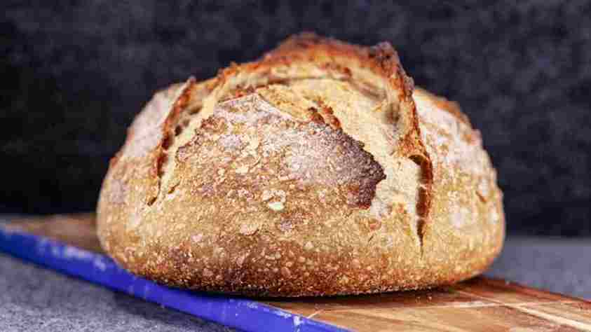

Masa madre
Es un cultivo simbiótico de las levaduras presentes de manera natural en alimentos, como los cereales, en especial levaduras como la Saccharomyces cerevisiae, responsable también de la fermentación del vino y la cerveza, y bacterias presentes en el medio ambiente.
